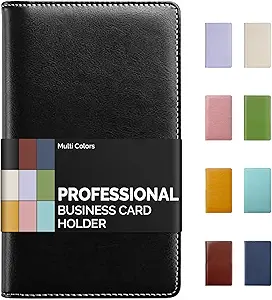

15 Common Budgeting Mistakes (And How to Fix Them for Real Financial Control)
Why do most budgets fail and what should you do differently?
Most budgets fail because of hidden mistakes like unrealistic spending limits, lack of tracking, and no plan for unexpected expenses. These issues make it difficult to stay consistent. The solution is to build a flexible budget, track your spending regularly, and prioritize saving before spending to maintain full control of your finances.

📘 In This Guide 👇
- Introduction to Common Budgeting Mistakes
- 1. Not Having a Clear Budget System
- 2. Not Tracking Your Spending Consistently
- 3. Underestimating Expenses
- 4. Ignoring Small, Everyday Expenses
- 5. Forgetting Irregular Expenses
- 6. Not Having an Emergency Fund
- 7. Setting Unrealistic Budget Goals
- 8. Mixing Wants and Needs
- 9. Saving What’s Left Instead of Paying Yourself First
- 10. Misusing Credit Cards to Cover Budget Gaps
- 11. Failing to Plan for Debt Repayment
- 12. Relying Too Much on Willpower
- 13. Overcomplicating Your Budget
- 14. Not Communicating About Money (For Couples or Families)
- 15. Giving Up After a Bad Month
- Powerful Strategies to Make Your Budget Work
- Frequently Asked Questions
- Final Thoughts: Keep Budgeting Simple and Sustainable
Introduction to Common Budgeting Mistakes
This guide is based on proven budgeting systems used by financial counselors, nonprofit credit agencies, and long-term savers around the world.
At SmartMoneyTrek, we focus on practical personal finance systems designed for real people, especially those building stability from limited income.
If you want a simple tool to start your budget immediately, this is what most beginners use:

- ✔ Easy monthly layout
- ✔ Tracks spending clearly
- ✔ Perfect for beginners
1. Not Having a Clear Budget System
The mistake:
Managing your finances without a defined budgeting system relying on guesswork or mental tracking instead of a structured plan.
Why it hurts:
Without a clear system, your spending becomes reactive, not intentional. Money slips through unnoticed, leading to poor expense tracking and consistent overspending.
How to fix it:
Use a structured budgeting method like zero-based budgeting, where every dollar is assigned a purpose before the month starts. Whether you choose a budgeting app, spreadsheet, or notebook, the goal is simple: total visibility and control over your money.
Saving money works best when you are tracking every dollar with a zero-based-budget.
2. Not Tracking Your Spending Consistently
The mistake:
Setting a budget but failing to monitor your actual spending.
Why it hurts:
Without consistent expense tracking, your budget becomes ineffective. You lose visibility, making it easy to overspend and miss financial targets.
How to fix it:
Track your expenses regularly, ideally weekly to stay aligned with your budget. Consistent tracking improves awareness, strengthens spending control, and helps you adjust before small issues become bigger problems.
If your fixed expenses feel too high, learn how to reduce monthly expenses without sacrificing essentials.
3. Underestimating Expenses
The mistake:
Using unrealistic, low estimates when planning your budget to make it seem easier to manage.
Why it hurts:
Inaccurate expense estimates lead to consistent overspending, budget shortfalls, and the false impression that your budget isn’t working.
How to fix it:
Build your budget using real spending data. Review past bank statements and categorize your expenses accurately. Then add a small buffer to each category to improve accuracy and prevent overspending.
4. Ignoring Small, Everyday Expenses
The mistake:
Overlooking minor daily expenses like snacks, transport, or quick online purchases.Why it hurts:
Frequent small expenses accumulate over time, leading to unnoticed cash leakage and reduced savings.How to fix it:
Track all expenses—no matter how small. Consistent expense tracking helps you identify spending patterns, eliminate waste, and maintain full control of your budget.If you’re starting from zero, read our guide to building savings from zero to strengthen your financial foundation.
5. Forgetting Irregular Expenses
The mistake:
Failing to account for non-monthly or irregular expenses in your budget.
Why it hurts:
When these expenses arise, they disrupt your budget and feel like unexpected financial emergencies.
How to fix it:
Plan ahead by creating sinking funds. Break down annual or irregular costs into manageable monthly contributions to stay prepared and maintain budget stability.
For those who prefer more precision and control, zero-based budgeting assigns every dollar a specific purpose.
High monthly bills often lead to debt. If that’s your situation, visit our how to reduce debt and stop high interest payments eating your income.
6. Not Having an Emergency Fund
The mistake:
Operating without an emergency fund or financial safety net.
Why it hurts:
Unexpected expenses; medical bills, repairs, or income loss can quickly derail your budget and push you into debt.
How to fix it:
Build an emergency fund starting with a small, achievable target, then gradually grow it to cover 3–6 months of living expenses. Make it a core part of your financial plan, not an afterthought.
If your income is tight, learn realistic ways to increase your income so you can improve your savings rate.7. Setting Unrealistic Budget Goals
The mistake:
Creating an overly restrictive budget that cuts out all discretionary spending.
Struggling to control overspending? This method is highly effective for staying disciplined:

- ✔ Stops overspending instantly
- ✔ Great for problem categories
- ✔ Easy cash-based control
Why it hurts:
Unrealistic budgeting leads to burnout, reduced consistency, and impulsive “revenge spending” that breaks your plan.
How to fix it:
Build a balanced budget by including a guilt-free spending category (around 5–10% of your income). A sustainable budget is more effective than a perfect but unmaintainable one.
8. Mixing Wants and Needs
The mistake:
Classifying non-essential expenses as necessities within your budget.
Why it hurts:
This misclassification inflates essential spending, reduces financial flexibility, and limits your ability to save or invest.
How to fix it:
Clearly separate and prioritize your expenses:
- liNeeds: rent, food, utilities
- Wants: dining out, subscriptions, entertainment
Maintain strict boundaries between these categories to improve spending decisions and protect your savings.
9. Saving What’s Left Instead of Paying Yourself First
The mistake:
Treating savings as an afterthought, only saving what remains after spending.
Why it hurts:
This approach leads to inconsistent savings and, in most cases, little or no money set aside.
How to fix it:
Adopt a “pay yourself first” strategy. Automate your savings and treat it as a fixed expense deducted at the start of your income cycle.
10. Misusing Credit Cards to Cover Budget Gaps
The mistake:
Using credit cards to cover overspending or fill gaps in your budget.
Why it hurts:
This habit turns short-term cash flow issues into long-term debt, often with high interest costs.
How to fix it:
Limit spending in problem categories by using cash or a debit card. Only use credit cards when you can pay the full balance each month to avoid interest and maintain financial control.
11. Failing to Plan for Debt Repayment
The mistake:
Relying on minimum payments without a clear debt repayment strategy.
Why it hurts:
Minimum payments extend your repayment timeline and increase total interest, keeping you in debt longer.
How to fix it:
Use a structured repayment method:
- Debt snowball: focus on clearing the smallest balances first
- Debt avalanche: prioritize debts with the highest interest rates
Choose one approach and stay consistent to accelerate debt payoff.
12. Relying Too Much on Willpower
The mistake:
Depending solely on self-discipline to manage spending habits.
Why it hurts:
Willpower is inconsistent especially during stress or impulse-driven moments, leading to poor financial decisions.
How to fix it:
Build systems that support better financial behavior:
- Remove spending triggers
- Set spending limits and alerts
- Automate key decisions like saving and bill payments
Make smart money choices easier and more consistent.
13. Overcomplicating Your Budget
The mistake:
Using overly complex budgeting systems that are difficult to maintain consistently.
Why it hurts:
Complexity leads to inconsistency when a budget is hard to manage, you’re more likely to abandon it altogether.
How to fix it:
Simplify your approach with a proven framework like the 50/30/20 rule:
- 50% Needs
- 30% Wants
- 20% Savings and debt repayment
A simple, sustainable budgeting system delivers more consistent and effective results.
14. Not Communicating About Money (For Couples or Families)
The mistake:
Managing shared finances without clear communication or joint planning.
Why it hurts:
Lack of alignment on spending, goals, and priorities often leads to conflict, inconsistent decisions, and overspending.
How to fix it:
Schedule regular financial check-ins. Discuss your budget, align on financial goals, and set clear spending limits to ensure accountability and consistency.
15. Giving Up After a Bad Month
The mistake:
Abandoning your budget after a setback or one month of poor performance.
Why it hurts:
Quitting breaks consistency, the key driver of long-term financial progress and resets your momentum.
How to fix it:
Adopt a flexible, growth focused approach:
- Adjust budget categories as needed
- Learn from spending mistakes
- Stay consistent and keep moving forward
One difficult month doesn’t define your financial success your consistency does.
Powerful Strategies to Make Your Budget Work
Fixing budgeting mistakes is essential, but building a reliable system is what drives consistent, long-term financial results.
✔ Focus on Cash Flow Management
Effective budgeting goes beyond expense tracking. It’s about actively directing income toward priorities like savings, debt repayment, and essential spending.
✔ Build Flexibility into Your Budget
Your financial plan should adapt to changes in income, expenses, and lifestyle. A flexible budget is easier to maintain and more resilient.
✔ Leverage Automation
Automate savings, bill payments, and investments to reduce manual effort, avoid missed payments, and improve consistency.
✔ Review and Adjust Regularly
Treat your budget as a dynamic tool. Conduct monthly reviews to optimize spending, update goals, and stay aligned with your financial plan.
✔ Track and Celebrate Progress
Recognizing small financial wins reinforces positive habits and builds momentum toward larger financial goals.

Learn More on SmartMoneyTrek
Explore our core financial guides:
- Save Money – proven ways to cut bills and build savings
- Budgeting – Tools and strategies to control your money
- Make Money – real side hustles and income ideas
- Loans & Debt – How to borrow wisely and eliminate debt
Frequently Asked Questions
The biggest mistake is not tracking spending. Without tracking, you lose control of your money and overspending becomes inevitable.
Most budgets fail because they are unrealistic, too restrictive, or not adjusted over time. Consistency and flexibility are key to success.
Start by tracking all expenses, cutting unnecessary costs, building a small emergency fund, and automating your savings to stay consistent.
The 50/30/20 rule is one of the best methods for beginners because it is simple, flexible, and easy to maintain.
A good target is at least 20% of your income, but you can start smaller and increase gradually as your income grows.
You should review your budget weekly to track spending and monthly to adjust for changes in income or expenses.
Both work well. Cash helps control overspending, while digital tools offer automation and convenience. Choose what fits your habits.
If you want to stay consistent and never lose track of your finances again, this tool makes budgeting effortless:

- ✔ Complete budgeting system
- ✔ Keeps finances organized
- ✔ Ideal for long-term planning
Final Thoughts: Budgeting Is About Behavior, Not Just Numbers
Budgeting isn’t just a financial exercise, it’s a system of habits and decision-making.
Long-term success doesn’t come from perfect spreadsheets. It comes from consistency, adaptability, and building systems that support better financial behavior.
When you eliminate these 15 budgeting mistakes and apply the right strategies, your budget becomes more than a plan, it becomes a reliable tool for managing money, reducing stress, and achieving your financial goals.
The key principle is simple:
A budget doesn’t restrict your lifestyle, it gives you control over your money.
Start with a simple system, stay consistent, and refine it as your income and priorities evolve. That’s how sustainable financial progress is achieved.
Ready to Apply This Budgeting Method?
Learn how to create a simple monthly budget step by step and start organizing your income today. Create Your Monthly Budget
Your financial journey doesn’t need to begin with perfection. It simply needs to begin with consistency, because consistent action, over time, is what turns small steps into lasting progress.
This content is for educational purposes only and does not constitute financial advice.
This page may contain affiliate links. We may earn a commission at no extra cost to you.